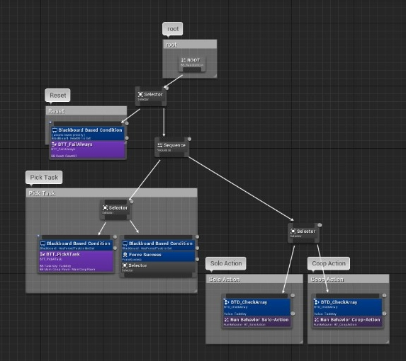

The Red Stare is a room-scale VR game about spying on communist spies from your apartment window.
Data:
- Platform
- HTC Vive
- Oculus (3 sensors)
- Genre
- Roomscale VR
- Puzzle
- Time
- Project: September 2016 - July 2017
- Personal: February 2017 - July 2017
- Team
- Play:d
- 18 members during my presence
- Awards and Recognition's
- Steam - Released July 2017
- Dutch Game Awards:
- finalist for: best student art, design, and tech.
- Winner of: Best student art and design.
For the red stare I worked on most of the AI systems, which where divided in 3 systems:
The Humans have a simple rule based behavior tree. Because this made most sense with the initial idea of the game.
This means that each person, has a set of rules, with what they can do when, for example "between 20:00 & 5:00 be at home".
This made it for designers really easy to give the different persons their behavior, and make their puzzles.
The way those rules where put into behavior for the AI is by a behavior tree consisting of 3 main branches.

- A branch deciding on the task to do.
- A branch for doing a action with only 1 pawn
- A branch for doing a action with multiple pawns
deciding on a task is really straight forward:
If i would do the same kind of puzzle AI again, i would use a different kind of approach.
Instead of creating tasks if a pawn needs a new one, I would create a daily task list with what each character will be doing at the start of the day.
Cars use a spline based movement pattern, over the road there are multiple splines laid out for the cars to follow.
When a car is spawned, it will take a random one of these routes, meaning that just like real live, no car will be exactly straight behind the other.
This makes it really optimized, as you can calculate a lot of points over these splines in front, and it still keeps it looking real.
For the Cars i'm really satisfied with it. it works really nice and it is really fast.
The birds are fairly simple, there is a manager in charge of the amount of birds in the level. Every time a bird goes too far away, it get's reset to a pre-defined radius from the player.
The birds are fairly basic, they only move forward and by way of raycasts spread over the ticks, they check if anything is in front, and they need to turn around.
To give the birds some life-like flying patterns, without creating lagg and using much calculations, I put a few invisible blocks in the air, where the birds will fly around, making it very pleasing and lifelike to the player.
If I could have had more time, I would have loved to add some way for the birds to land on top of the roofs or electric poles.
I would probably have done this with a "catch collider" which catches the bird, and motions the bird fluently to a place to land.
unfortunately I did not have time to make this before the release, and the designers/producer thought they were good enough now, and it was better not to risk breaking them after release.